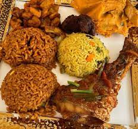

jollof

Home
description on how to cook Nigeria jollof rice
Nigerian Jollof Rice is a classic and beloved West African dish
known for its rich, smoky flavor and vibrant red color. While there
are many variations, the core of the dish is rice cooked in a
flavorful tomato and pepper stew. Here is a general description of
how to cook it:
Key Ingredients
- Rice: Long-grain parboiled rice is the traditional choice as
it holds its shape well and doesn't get mushy. Golden Sella
Basmati is another excellent option.
- Tomatoes and Peppers: base of the stew is a blend of
fresh tomatoes, red bell peppers (tatashe), red onions, and hot
peppers like Scotch bonnet (atarodo) or habanero for heat.
- Aromatics and Spices: Essential flavor enhancers include
ginger, garlic, bay leaves, dried thyme, curry powder, and
seasoning cubes (like Maggi or Knorr).
- Oil: Vegetable oil is typically used for frying the stew.
- Tomato Paste: This is crucial for deepening the color and
adding a rich, concentrated tomato flavor.
- Oil: Chicken, beef, or turkey stock is a key
ingredient, providing a deep, savory foundation for the rice
to cook in.
- Onions: Sliced and used at various stages to add flavor and
sweetness.
Cooking Process
- Prepare the Meat and Stock: The process often begins by
seasoning and boiling your choice of meat (chicken, beef, or
turkey) until it's tender. The resulting stock is saved, as
it is a fundamental part of the jollof's flavor. The meat is
then often fried or grilled separately.
- Make the Stew Base: The fresh tomatoes, bell peppers, onions,
and hot peppers are blended into a smooth purée. Some cooks
roast the vegetables first to add a smoky flavor.
- Fry the Stew: In a large pot or Dutch oven, heat oil and fry
sliced onions until fragrant. Then, add the tomato paste and
fry it until it darkens in color and the oil separates. This
is a critical step that removes the raw, acidic taste of the
tomato paste. Next, add the blended pepper mixture and let it
cook down over medium-low heat until most of the water has
evaporated and the oil begins to float on top. This process
can take a while, but it's essential for a rich flavor.
- Add the Rice and Stock: Once the stew is ready, add the meat
stock, bay leaves, and spices (curry powder, thyme, and
seasoning cubes). Stir everything together and bring it to a
boil. Rinse the parboiled rice thoroughly until the water runs
clear to remove excess starch. Stir the rice into the boiling
stew, ensuring every grain is coated.
- Cook the Rice: Cover the pot with a tight-fitting lid. Many
people also place a layer of aluminum foil or parchment paper
under the lid to trap in the steam. Reduce the heat to the
lowest possible setting and let the rice steam-cook. Avoid
stirring too much, as this can break the rice grains. The
steam is what cooks the rice, infusing it with all the
delicious flavors of the stew.
- Final Touches: The cooking time can vary, but it typically
takes about 30-45 minutes. You can check the rice periodically
to see if it's done and if it needs a little more water. Once
the rice is cooked through and fluffy, give it a gentle final
stir to combine everything. A final touch often involves
adding more fresh sliced onions, tomatoes, and a knob of
butter before covering it for a few more minutes to let the
flavors meld.
Nigerian Jollof Rice is often served with fried plantains, coleslaw,
and the fried or grilled meat. The "party jollof" is particularly
famous for its unique smoky flavor, which traditionally comes from
being cooked over firewood. This effect is often replicated at home by
cooking the rice until a slight caramelization or "burn" forms at the
bottom of the pot.